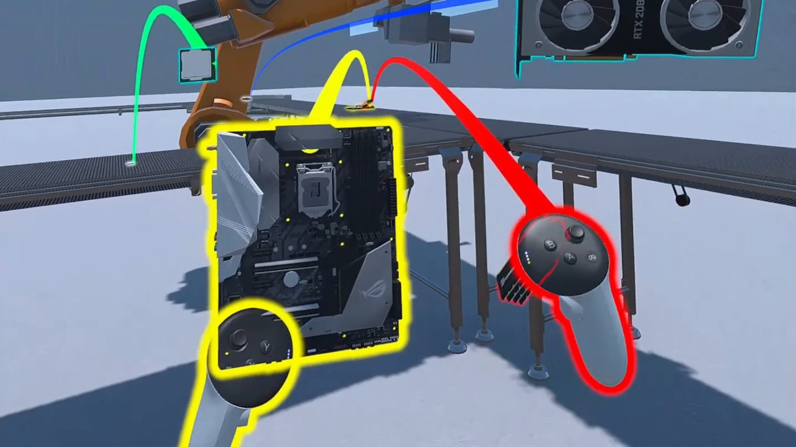
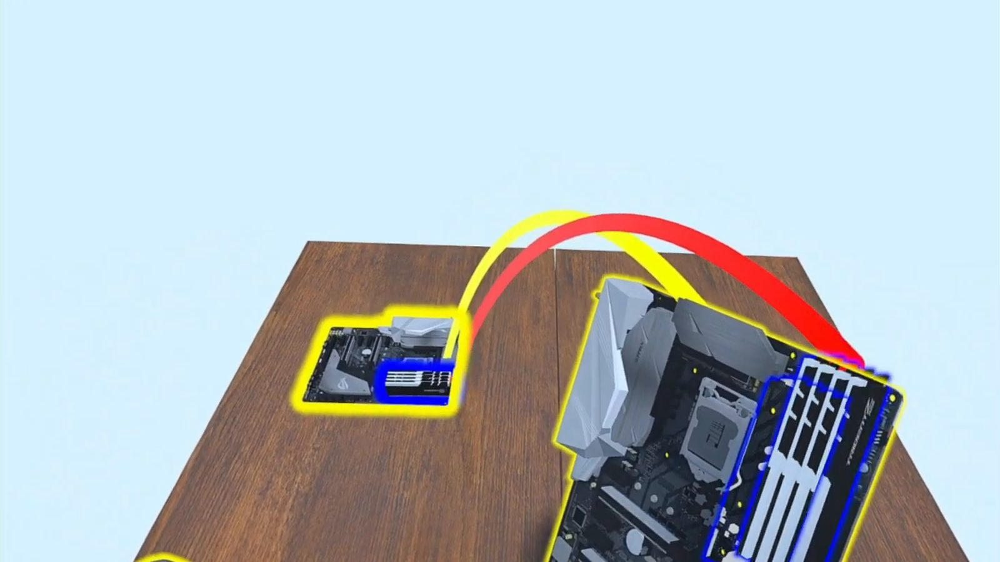

Permanent Proxies for Bimanual Selection and Manipulation in VR
IEEE Conference on Virtual Reality and 3D User Interfaces Abstracts and Workshops (VRW), 2025. Poster.

Abstract
Copies (proxies) of objects are useful for selecting and manipulating objects in virtual reality (VR). Temporary proxies are destroyed after use and must be recreated for reuse. Permanent proxies persist after use for easy reselection, but can cause clutter. To investigate the benefits and drawbacks of permanent and temporary proxies, we conducted a user study in which participants performed 6DoF tasks with proxies in the Voodoo Dolls technique, revealing that permanent proxies were more efficient for hard reselection and preferred.
Video

Cite
B. Yang, J.-S. Liu, X. He, B. Tversky, and S. Feiner, “Permanent Proxies for Bimanual Selection and Manipulation in VR,” in Proc. IEEE Conference on Virtual Reality and 3D User Interfaces Abstracts and Workshops (VRW), 2025, pp. 1330–1331, doi: 10.1109/VRW66409.2025.00311.
@inproceedings{yang2025permanentproxies,
title={Permanent Proxies for Bimanual Selection and Manipulation in VR},
author={Yang, Ben and Liu, Jen-Shuo and He, Xichen and Tversky, Barbara and Feiner, Steven},
booktitle={2025 IEEE Conference on Virtual Reality and 3D User Interfaces Abstracts and Workshops (VRW)},
pages={1330--1331},
year={2025},
doi={10.1109/VRW66409.2025.00311}
}